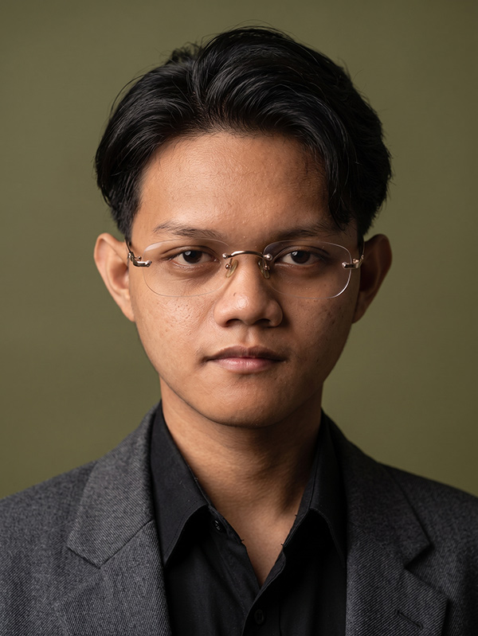
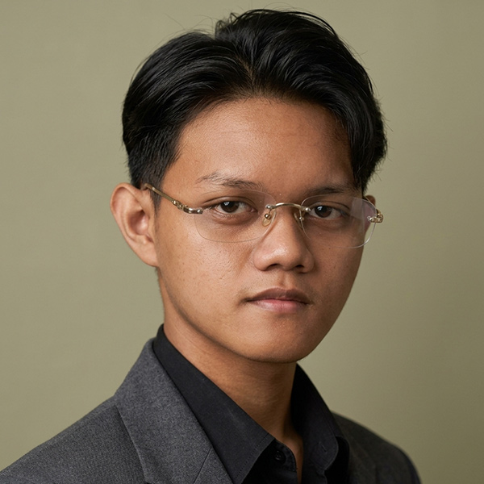

Lulusan Teknik Komputer dan Jaringan dengan pengalaman langsung di pemeliharaan perangkat, jaringan, administrasi data, hingga operasional harian.

Aplikasi pencatatan keuangan pribadi berbasis web — mencatat pemasukan dan pengeluaran harian, menampilkan grafik tren saldo, dan meringkas kondisi keuangan secara real-time.

Saya Rasyid, lulusan Teknik Komputer dan Jaringan SMK Negeri 2 Bogor yang saat ini aktif bekerja sebagai IT Technician sambil menjalani pengalaman part-time di sisi operasional toko — terbiasa berpindah antara sisi teknis dan administratif tanpa kehilangan ketelitian di keduanya.
Saya juga pernah menjalani PKL di administrasi data pembiayaan, serta aktif di organisasi sekolah sebagai Ketua Divisi Umum. Saat ini saya juga melanjutkan studi di jenjang S1 Sistem Informasi, Universitas Terbuka, sambil tetap bekerja penuh waktu.